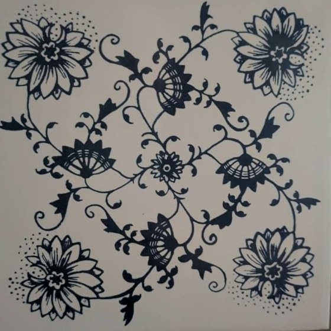
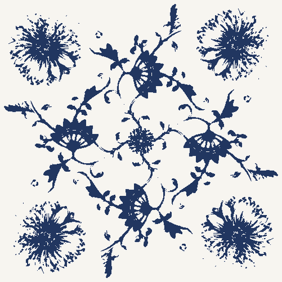
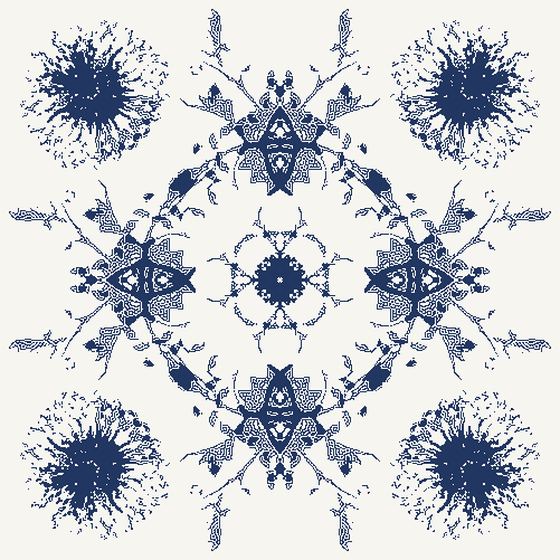
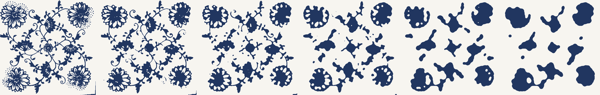

One kitchen tile, written as a sum of cosines.
Drag anything.
how many terms
mirror or no mirror
how hot the kiln
the photograph

On a wall in a valley under the Krkonoše.

Rebuilt from the equation.
why there are no sines
Put the origin on the tile's four-fold centre. A real image with C4 symmetry there has purely real Fourier coefficients — reality gives F(−k) = conj F(k), C4 gives F(−k) = F(k), and nothing imaginary survives. Largest imaginary part found: 2.6 × 10−17.
the symmetry, measured first
| rotation | mirror | ||
|---|---|---|---|
| 90° | +0.536 | vertical | +0.158 |
| 180° | +0.480 | horizontal | +0.189 |
| 270° | +0.536 | diagonal | +0.169 |
| shifted 37 px | +0.120 | antidiagonal | +0.190 |
| shuffled | −0.002 |
Mirrors sit at the level of a meaningless shift. The group is p4.
the plant and the snowflake
χ = 0.199 — a plant.

χ = 0 — a snowflake.
p4 has no mirrors, so amn and anm are free to differ. Force them equal and the pattern crystallises. Things that grow are chiral; things that crystallise have mirrors.
| t | χ | mirror corr. | rot 90° |
|---|---|---|---|
| 0.00 | 0.000 | 1.000 | 1.000 |
| 0.25 | 0.014 | 0.393 | 1.000 |
| 1.00 | 0.199 | 0.254 | 1.000 |
| 1.50 | 0.399 | 0.237 | 1.000 |
Almost all the handedness appears in the first fifth of that slider. Past the tile, χ doubles and the picture barely moves. Whether a larger χ looks more twisted is not measured and not claimed.
what the firing does

Generations 0, 1, 3, 8, 20, 60. Perimeter 40 744 → 6 210; 166 ink regions → 13.
A real firing is the first three steps of that third slider — across the plausible Ea, one high firing gives ℓ between 0.007 and 0.29 mm. One firing barely touches the tile. Curvature flow has no non-trivial fixed point, so left alone it does not preserve a pattern, it removes one.
the cost of detail
The last 9 % costs three times what the first 90 % did.
an onion pattern with no onion in it
Zwiebelmuster has five motifs: bamboo, aster, peony, peach, and the “onion”. Audited against a marked Meissen (Teichert) plate, this tile has one of them.
| canonical motif | on this tile |
|---|---|
| aster, with stippled halo | present |
| hooked stems, serrated leaves | present |
| bamboo stalk | absent |
| peach | absent |
| the “onion” | absent |
It kept the flowers and dropped every fruit — the motifs the pattern is named for. Not Zwiebelmuster, then: a derivative, redrawn for printing and rearranged four-fold.
The tile itself is Czechoslovak, 15 × 15 cm, 4 mm. An identical one is sold second-hand as původní obkládačky vzor cibulák; in Czech that name covers the whole blue-on-white floral family. Correlated against it: rotations +0.238, mirrors +0.097 — same tile, same handedness.
the three hundred years before this tile
| before 1722 | Kangxi blue-and-white, China. The flowers are asters and tree peonies, mudan. |
| 1730s | Meissen. Höroldt adapts the motifs from a Chinese bowl. Date disputed: the Meissen museum says c. 1730, 1739 is most often quoted, Czech sources say 1738–39. |
| Painters take the fruit for onions. Which fruit is still unsettled — a Chinese melon per the Meissen museum, a pomegranate per Czech sources. | |
| before 1800 | Other factories are already copying it. |
| 1885 | Dubí. Czech production begins, and hand-painting is replaced by underglaze printing from steel plates. |
| 1895 | Bernard Bloch buys the works and adds wall tiles. The pattern leaves the plate. |
| today | RAKO sells a Cibulák tile, decor fired at 820 °C. |
Sources: Meissen Porcelain Museum; cs.wikipedia Cibulák; kudyznudy.cz on Dubí; royalcrystal.cz on originals versus copies. Where they disagree, both are given.
what is not settled
Ea for Co²⁺ in a glaze melt: over the plausible 200–300 kJ/mol the predicted edge width moves by a factor of 40, so no bleed length is quoted anywhere here.
The cosine counts hold against this photograph's resolution; a sharper one would need more.
The tile's maker and year. The back gives VH20 and an arc reading …CHOSLOVAK….